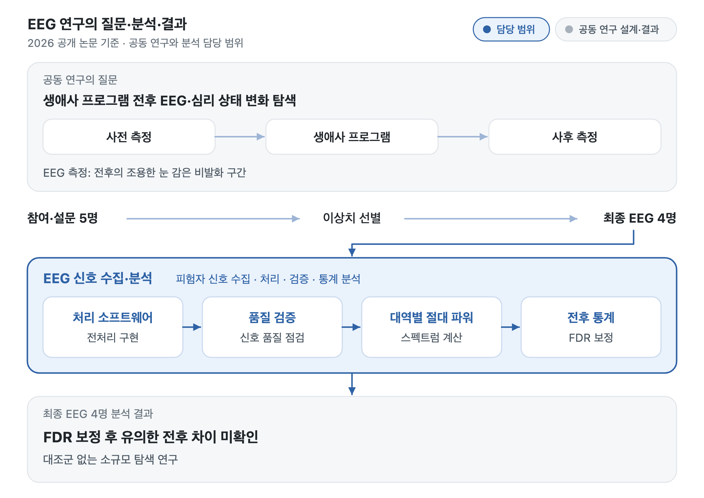

개발 · 분석 · 학술 발표
연구·논문
오픈소스 플랫폼·AI와 생체신호를 연구했습니다.
각 연구에서 맡은 일과 확인한 결과의 범위를 구분했습니다.
오픈소스 플랫폼 · AI
개발에서 이어진 ODOC 연구
웹 플랫폼 연구는 논문으로 게재했고, 후속 AI 보안 분석은 학술대회에서 발표했습니다.
플랫폼 연구 · 제1저자 게재
지속 가능한 오픈소스 생태계를 위한 프로젝트 탐색 및 기여 촉진 플랫폼 설계 및 구현
프로젝트 탐색·기여 시각화·게임화와 GraphQL 수집·Redis 캐시의 응답 성능을 다뤘습니다.
논문 버전 실험 · ODOC 백엔드를 로컬 환경에서 구동하고, 자동화한 벤치마크를 실행해 반복 측정했습니다.
조회 방식 비교
프로젝트 탐색의 프로젝트 정보·이슈 수·기여자 정보 조회를 GitHub REST API(41회 호출)와 GraphQL API(1회 호출)로 수행했습니다.
| 항목 | REST API | GraphQL API |
|---|---|---|
| 평균 응답 | 4.57±0.12초 | 0.83±0.05초 |
| P95 | 5.32초 | 1.12초 |
캐시 적용 전후
k6로 가상 사용자 약 100명이 동시에 탐색을 요청하고, 워밍업 뒤 3회 이상 반복했습니다.
| 항목 | 적용 전 | 적용 후 |
|---|---|---|
| 평균 응답 | 854±18ms | 122±6ms |
| 초당 요청 | 58 | 187 |
| DB 쿼리 발생률 | 100% | 4.8% |
두 실험은 조건이 다른 별개의 측정입니다. 수치는 논문 교정본의 표 1·표 2에서 옮겼습니다.
AI 보안 분석 · 제1저자·발표
부분 스캔 환경에서 False-Clean 방지를 위한 ODOC AI Agent의 투명성 기반 보안 분석 아키텍처 제안
부분 분석 결과가 저장소 전체의 안전성으로 읽히지 않도록, 분석 범위와 불확실성을 드러내는 구조를 연구했습니다.
2025 대회 버전의 보안과 추천/RAG는 동료 담당입니다. 이후 졸업논문 연구를 위해 OSV 구조를 반영해 보안 분석을 확장했습니다.
2025 학술대회 발표 기록
OSS생태계플랫폼(ODOC): 지속 가능한 오픈소스 소프트웨어 생태계를 위한 지능형 프로젝트 탐색 플랫폼 개발
신혜리·정윤환·진다빈·이미란 · KSC 2025 · 2025.12.18 · 구두발표 프로그램 18A-O8-04 · 제1저자 · 발표자 신혜리
Ecosystem Explorer의 필터링·카드·API 흐름을 다뤘습니다.
OSS생태계플랫폼(ODOC): 기여 활동 시각화와 게임화 기반 참여 촉진 기능 개발
신혜리·정윤환·진다빈·이미란 · 한국산업정보학회 2025 추계 · 제1저자 · 발표자 신혜리
생체신호 · 수집·처리·통계
EEG·PPG 신호 분석과 객관적 지표 산출
연구실에서 PPG 신호로 PPI 추정 연구를 먼저 진행했습니다. 이후 생애사 프로그램 공동 연구에서 피험자의 생체신호를 수집하고, 연구 주제와 어떤 관련이 있는지 살펴볼 객관적 지표를 산출하는 역할을 맡아 EEG를 분석했습니다.
생애사 프로그램 EEG 연구 · 제1저자 게재
생애사 프로그램 전후의 EEG와 심리 변화를 살펴본 공동 연구입니다. 2025년 분석·학술 발표를 진행했고, 2026년 공개 논문으로 게재됐습니다.
MATLAB으로 EEG 처리 소프트웨어를 만들어 신호를 처리·검증하고, 대역별 파워와 전후 통계를 계산했습니다.

처리 순서
- 전처리추세 제거, 0.5–50 Hz 대역 통과, 아티팩트 제거를 적용했습니다.
- 품질 점검전력선 잡음이나 움직임이 섞인 신호를 그대로 비교하지 않도록 점검했습니다.
- 대역별 파워주파수 대역별 절대 파워를 계산했습니다.
- 전후 통계Wilcoxon 검정과 FDR 보정을 적용했습니다.
최종 EEG 4명의 분석에서 FDR 보정 후 유의한 전후 차이를 확인하지 못했습니다. 대조군 없는 소규모 탐색 연구이며, 관찰한 차이를 치료 효과나 기억력·인지 개선으로 단정하지 않았습니다.
공개 게재논문
Pre–Post EEG and Psychological Changes Following a Life Story Program in Older Adults: A Pilot Study
Hyeri Shin, Seunghwa Jeon, Miran Lee · Applied Sciences 16(7), 3577 · 2026.04.06 · SCIE
고령층 생애사 프로그램 전·후 정서 상태 변화 경향과 측두엽 EEG 절대 파워 변화 탐색
신혜리·전승화·이미란 · 재활복지공학회논문지 20(2), 102–111 · 2026 · KCI
KCI 게재 정보
두 논문은 같은 생애사 프로그램의 관련 연구입니다.
2025 EEG 학술 발표자료
- 2025.10.31 · 한국재활복지공학회
감마파 기반 뇌파 분석을 통한 생애사 프로그램의 자전적 기억 회상 효과 연구 · 제1저자 · 발표자 신혜리
- 2025.11.21 · 한국산업정보학회 추계 · 우수논문상
뇌파·심리 지표 기반 고령층 생애사 프로그램의 정서 안정 효과 분석 · 제1저자 · 발표자 신혜리